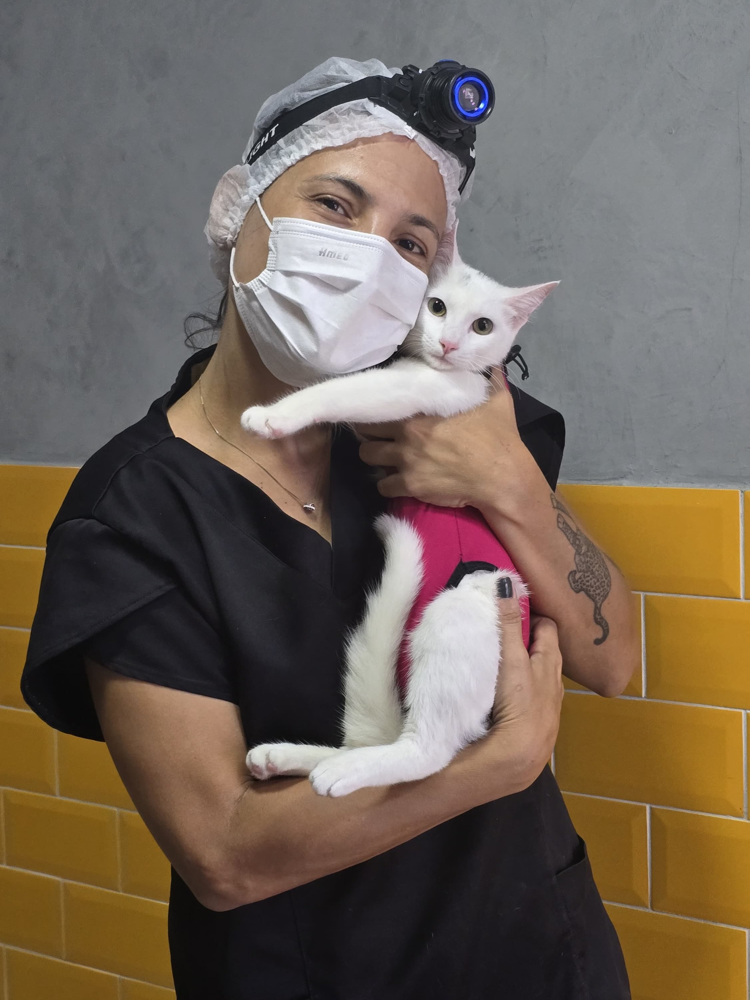
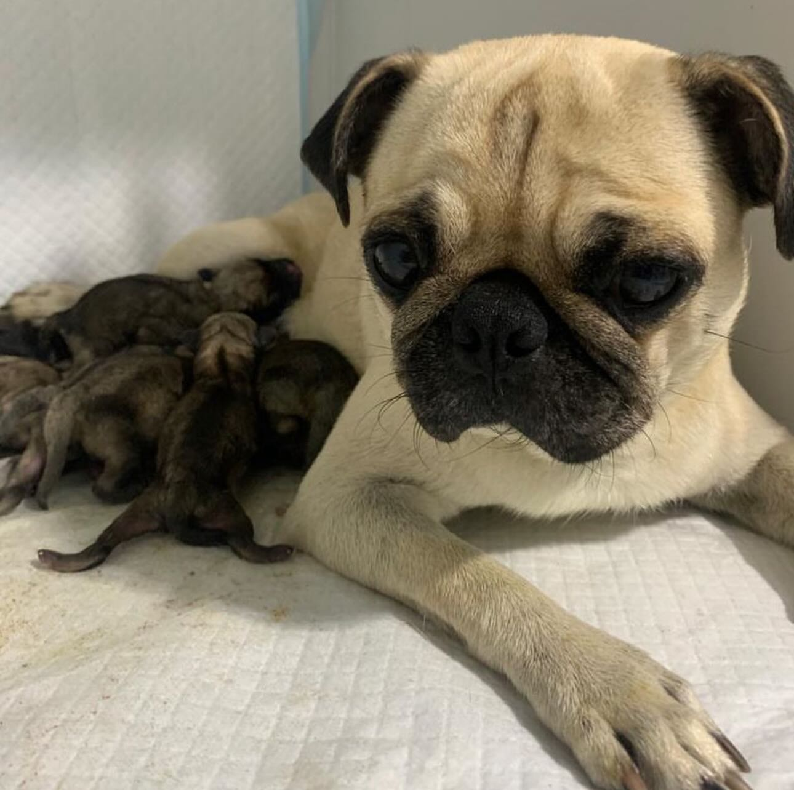

Galeria IC PET
Nossos Pacientes Atendidos
Alguns dos momentos e sorrisos registrados em nossa clínica e compartilhados no perfil @icpetpe.


No IC PET (@icpetpe) oferecemos acompanhamento clínico de alta precisão, diagnósticos modernos e cuidados preventivos para garantir a longevidade e o bem-estar do seu pet.


Localizado estrategicamente na Avenida Governador Carlos de Lima Cavalcante em Olinda, o IC PET nasceu com o compromisso de prestar uma medicina veterinária transparente, científica e acolhedora.
Atendimento focado na saúde preventiva, consultas especializadas e exames com padrão de qualidade.
Avaliação médica detalhada, check-ups preventivos e orientações de rotina para cães e gatos.
AgendarAnálises laboratoriais e exames complementares de alta confiabilidade para decisões precisas.
AgendarProtocolos vacinais atualizados com imunizantes importados para a máxima proteção da saúde do pet.
AgendarControle parasitário, programas de vermifugação e nutrição clínica adequada para cada fase.
AgendarCuidados estéticos e banho terapêutico com produtos hipoalergênicos e ambiente seguro.
AgendarAtendimento direcionado para dermatologia, cardiologia, nutrição e acompanhamento geriátrico.
ConsultarAlguns dos momentos e sorrisos registrados em nossa clínica e compartilhados no perfil @icpetpe.
Relatos de tutores que confiam no atendimento do IC PET.
"Atendimento atencioso e muito profissional em Olinda! Levei meu pet para consulta e fui extremamente bem orientada. A clínica é linda e higienizada."
"Excelente clínica na Av. Gov. Carlos de Lima Cavalcante. Pontualidade no atendimento e muito carinho com os animais. Recomendo de olhos fechados!"
"Gosto muito de acompanhar as postagens e dicas do @icpetpe no Instagram. O atendimento pelo WhatsApp é rápido e facilitou bastante o agendamento."
Venha nos visitar ou solicite seu agendamento direto pelo WhatsApp.
Av. Gov. Carlos de Lima Cavalcante, 632
Olinda - PE, CEP: 53030-260
Segunda a Quinta-feira: 09:00 às 15:00